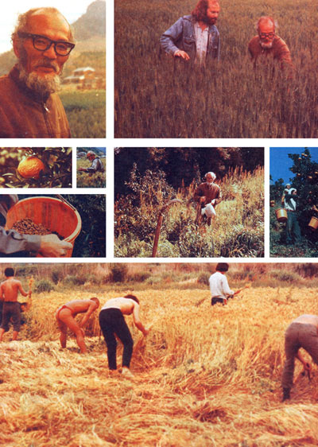

Masanobu Fukuoka may be one of the most farsighted and downright radical farmers in the world today! Why? Because over the past 30 years he has gradually abandoned most conventional agricultural practices in order to return control of his land to the most skilled grower of all ... Nature herself! In return-he claims-he has reaped both bumper crops and a peace that surpasses understanding.
Excerpted by permission from The One-Straw Revolution by Masanobu Fukuoka, copyright - 1978 by Rodale Press. Available in hard cover for $7.95 from any good bookstore or for $7.95 plus 95 cents shipping and handling from Mother's Bookshelf, P.O. Box 70, Hendersonville, North Carolina 28739.
For several years I had been living with a group of friends on a farm in the mountains north of Kyoto. We used the now-traditional "agribiz" methods of Japanese agriculture to grow rice, rye, barley, soybeans, and various garden vegetables.
When I first heard stories about Mr. Fukuoka, then, I was skeptical. How could it be possible to grow highyielding crops of rice and winter grains each year simply by scattering seed onto the surface of an unplowed field? There had to be more to it than that!
Whenever there was a lull in our work schedule, I used to travel to other parts of the country . . stopping at tarms and communes, working part time along the way. and, on one of these excursions, I paid a visit to Mr. Fukuoka's farm to learn about his work for myself.
I am not quite sure what I expected . . . but after having heard so much about this great teacher, I was somewhat surprised to see that he was dressed in the boots and work clothes of the average Japanese farmer.
I stayed at Mr. Fukuoka's farm for several months on that first visit, working in the fields and in the citrus orchard. There-and in the mud-walled huts during evening discussions with other student farm workers-the details of Mr. Fukuoka's method and its underlying philosophy gradually became clear to me.
For instance, if the newcomer expects "natural farming" to mean that nature farms while he sits and watches, Mr. Fukuoka soon teaches him that there is a great deal he must know and do. Strictly speaking, no farming is "natural". Agriculture is a cultural innovation that requires knowledge and persistent effort.
The fundamental difference between Mr. Fukuoka's method of farming and conventional agriculture is that he cooperates with nature rather than attempting to "improve" or conquer her. Once he has seen to it that conditions have been tilted in favor of his crops, in other words, Mr. Fukuoka interferes as little as possible with the plant and animal communities in his fields. I believe there is much we all can learn from that approach.
Look at this grain! I believe that a revolution can begin from this one strand of straw. Then take a look at these fields of rye and barley. This ripening grain will yield about 22 bushels (1,300 pounds) per quarter acre. I believe this matches the top yields in Ehime Prefecture (where I live), and therefore, it could easily equal the top 'harvest in the whole country . . since this is one of the prime agricultural areas in Japan. And yet . . . these fields have not been plowed for 25 years!
To plant, I simply broadcast rye and barley seed on separate fields in the fall . . . while the rice is still standing! A few weeks later, I harvest the rice and spread the straw back over the fields from which it came.
It is the same for the rice seeding. This winter grain (rye and barley) will be cut around the 20th of May. About two weeks before these crops fully mature, I broadcast rice seed over them. After they have been harvested-and the grains threshed-I spread the resulting rye and barley straw over the field.
I suppose that using the same method to plant rice and winter grain is unique to this kind of farming . . . but there is an even easier way! As we walk over to the next field, let me point out that the rice there was sown last fall at the same time as the winter grain. In fact, the whole year's planting was finished in the field by New Year's Day!
You might further notice that white clover and weeds are also growing in these fields. Clover seed was sown among the rice plants in early October (shortly before the rye and barley). I do not worry about sowing the weeds . . . they reseed themselves quite easily!
So the order of planting in this field is as follows: In early October, I broadcast clover among the rice . . . followed by winter grain in the middle of the month. In early November, the rice sown the previous year is harvested. Then I sow next year's rice seed and lay straw across the field. The rye and barley you see in front of you were grown this way.
In caring for a quarter-acre field, one or two people can do all the work of growing rice and winter grain in a matter of days!
This method completely contradicts modern agricultural techniques. It throws "scientific knowledge" and traditional farming know-how out the window. With this kind of farming-which uses no machines, no prepared fertilizer, and no chemicals-it is possible to attain a harvest equal to or greater than that of the average Japanese farm. The proof is ripening before your eyes.
This way of farming has evolved according to the natural conditions of the Japanese islands, but I feel that "natural farming" could also be applied in other areas . . . and to the raising of other indigenous crops.
In regions where water is not so readily available, for example, upland rice or other grains-such as buckwheat, sorghum, or millet-might be grown. Instead of white clover, another variety of clover, alfalfa, vetch, or lupine might prove a more suitable field cover. Natural farming takes a distinctive form in accordance with the unique conditions of the area in which it is applied.
In making the transition to this kind of farming, some weeding, composting, or pruning may be necessary at first . . . but these measures should be gradually reduced each year. Ultimately, it is not the growing technique which is the most important factor, but rather the state of mind of the farmer.
For 30 years I lived only for my farming and had little contact with people outside my own community. During those years I was heading in a straight line toward a "donothing" agricultural method.
The usual way to go about developing a method is to ask "flow about trying this?" or "How about trying that?" . . . bringing in a variety of techniques, one upon the other. This is modern agriculture and it only results in making the farmer busier.
My way was opposite. I was aiming at a pleasant, natural way of farming . . . which results in making the work easier instead of harder. "How about not doing this? How about not doing that?"-that was my way of thinking.
By taking this approach, I ultimately reached the conclusion that there was no need to plow, no need to apply fertilizer, no need to make compost, no need to use insecticide! When you get right down to it, there are few agricultural practices that are really necessary.
The reason that man's "improved" techniques seem to be necessary is that the natural balance has been so badly upset beforehand by those same techniques that the land has become dependent on them.
Make your way carefully through these fields. Dragonflies and moths fly up in a flurry. Honeybees buzz from blossom to blossom. Part the leaves and you will see Insects, spiders, frogs, lizards, and many other small animals bustling about in the cool shade. Moles and earthworms burrow beneath the surface.
This is a balanced ricefield ecosystem. Insect and plant communities maintain a stable relationship here. It is not uncommon for a plant disease to sweep through this region and leave the crops in my fields unaffected.
And now look over at the neighbor's field for a moment. The weeds have all been wiped out by herbicides and cultivation. The soil animals and insects have been exterminated by poison. The earth has been burned clean of organic matter and micro-organisms by chemical fertilizers. In the summer you see farmers at work in the fields . . . wearing gas masks and long rubber gloves. These rice fields-which have been farmed continuously for over 1,500 years-have now been laid waste by the exploitive farming practices of a single generation.
For centuries, farmers have assumed that the plow is essential for growing crops. However, non-cultivation is fundamental to natural farming. The earth cultivates itself naturally by means of the penetration of plant roots and the activity of micro-organisms, small animals, and earthworms.
When the soil is cultivated, the natural environment is altered beyond recognition. The repercussions of such acts have caused the farmer nightmares for countless generations.
For example, when a natural area is brought under the plow, very strong weeds-such as crab grass and docks-sometimes come to dominate the vegetation. When these pests take hold, the farmer is faced with a nearly impossible task of weeding each year. Very often, the land is abandoned.
Moreover, weeds play an important part in building soil fertility and in balancing the biological community. As a fundamental principle, they should be controlled, not eliminated. Straw mulch, a ground cover of white clover interplanted with the crops, and temporary flooding provide effective weed control on my farm.
A local farmer who had expected to see my fields completely overgrown by weeds was surprised to find the barley growing so vigorously among the many other plants. Technical experts have also come here . . . seen the weeds, seen the watercress and clover growing all around . . . and have gone away shaking their heads in amazement.
Twenty years ago-when I was encouraging the use of " nanent ground cover in fruit orchards-there was not a blade of grass to be seen in fields or orchards anywhere in the country. But seeing orchards such as mine, people came to understand that fruit trees could grow quite well among the weeds and grasses. Today, orchards covered with grasses are common throughout Japan . . . and those without grass cover have become increasingly rare.
It is the same with fields of grain. Rice, barley, and rye can be successfully grown while the fields are covered with clover and weeds all year long! Here are some key points to remember when you're dealing with weeds:
As soon as cultivation is discontinued, the number of weeds decreases sharply. Also, the varieties of weeds in a given field will change.
If seeds are sown while the preceding crop is still ripening in the field, those seeds will germinate ahead of the weeds. Winter weeds sprout only after the rice has been harvested . . . but by that lime the winter grain already has a head start. Summer weeds sprout right after the harvest of barley and rye . . . but the rice is alreadv growing strongly. Timing the seeding in such a way than there is no interval between succeeding crops gives the grain a great advantage over the weeds.
Directly after the harvest-if the whole field is then covered with straw-the germination of weeds is stopped short. White clover sowed with the grain as a ground cover also helps to keep weeds under control.
The usual way to deal with weeds is to cultivate the soil. But when you cultivate, seeds lying deep in the earth-which would never have germinated otherwise-are stirred up and given a chance to sprout. Furthermore, the quick-sprouting, fast-growing varieties are given the advantage under these conditions. So you might actually say that the farmer who tries to control weeds by cultivating the soil is-quite literally-sowing the seeds of his own misfortune!
People interfere with nature, and-try as they maythey cannot heal the resulting wounds. Their careless farming practices drain the soil of essential nutrients .. . and the result is the yearly depletion of the land. If
left to itself, the soil maintains its fertility naturally . . in accordance with the normal, orderly cycle of plant and animal life.
From the time that weak plants first developed as a result of such unnatural practices as plowing and fertilizing, disease and insect imbalance have become a great problem in agriculture. Nature-left alone-is in perfect balance. Harmful insects and plant diseases are always present, but do not occur in nature to an extent which requires the use of poisonous chemicals. The sensible approach to disease and insect control is to grow sturdy crops in a healthy environment.
Furthermore, with natural-as opposed to "organic"-farming, there is no need to prepare compost! I will not say to you that you do not need compost . . . only that there is no need to work hard making it. If straw left lying on the surface of the field in the spring or fall is covered with a thin layer of chicken manure or duck droppings, in six months it will completely decompose.
To make compost by the usual method, the farmer works like crazy in the hot sun . . . chopping up the straw, adding water and lime, turning the pile, and hauling it out to the field. He puts himself through all this grief because he thinks it is a "better way". I would rather see people just scattering straw or hulls or woodchips over their fields!
Scattering straw maintains soil structure and enriches the earth so that prepared fertilizer becomes unnecessary. This, of course, is connected with non-cultivation. My fields may be the only ones in Japan which have not been plowed for over twenty years . . . yet the quality of the soil improves with each season! I would estimate that the surface layer-rich in humus-has become enriched to a depth of more than four inches during these years. This is largely the result of returning to the soil everything grown in the field but the grain itself.
For the most part, a permanent green manure cover and the return of all the straw and chaff to the soil will be sufficient to ensure fertility. To provide animal manure to help decompose the straw, I used to let ducks loose in the fields. If they are introduced as ducklings-while the seedlings are still young-the ducks will grow up together with the rice. Ten ducks will supply all the manure
necessary for a quarter acre of land and will also help to control weeds.
Using straw, green manure., and a little poultry manure, one can get high yields without adding compost or commercial fertilizer at all. For several decades now, I have been sitting back, observing nature's method of cultivation and fertilization. And while watching, I have been reaping bumper crops of vegetables, citrus, rice, and winter grain-as a gift, so to speak-from the natural fertility of the earth!
In growing vegetables in a "semi-wild" way-making use of a vacant lot, riverbank, or open wasteland-my idea is to just toss out the seeds and let the vegetables grow up with the weeds. I grow my vegetables on the mountainside . . . in the spaces between the citrus trees.
The important thing is to know the right time to plant. For the spring vegetables, the right time is when the winter weeds are dying back . . . and just before the summer weeds have sprouted. For the fall sowing, seeds should be tossed out when the summer grasses are fading away . . . and the winter weeds have not yet appeared.
It is best to wait for a rain that is likely to last for several days. Cut a swath in the weed cover and put out the vegetable seeds. There is no need to cover them with soil: Just lay the weeds you have cut back over the seeds to act as a mulch and to hide them from the birds and chickens until they can germinate. Usually the weeds must be cut back two or three times in order to give the vegetable seedlings a head start . . . but sometimes just once is enough.
Where the weeds and clover are not so thick, you can simply toss out the needs. The chickens will cat some of them, but many will germinate. If you plant in a row or furrow, there is a chance that beetles or other insects will devour many of the seeds . . . for these creatures walk in a straight line. Chickens also spot a patch which has been cleared and come to scratch around. It is my experience that it is best to scatter the seeds here and there.
Vegetables grown in this way are stronger than most people think. If they sprout up before the weeds, they will not be overgrown later on. There are some vegetables-such as spinach and carrots-which do not germinate easily. Soaking the seeds in water for a day or two, then wrapping them in little pellets of damp clay should solve the problem.
To the extent that people separate themselves from nature, they spin out farther and farther from the center. At the same time, a centripetal effect asserts itself and the desire to return to nature arises.
But if people merely become caught up in reacting-moving to the left or to the right, depending on conditions-the result is only more activity. The non-moving point of origin-which lies outside the realim of relativity-is passed over, unnoticed. I believe that even "returning-to-nature" and anti-pollution activities-no matter how commendable-are not moving toward a genuine solution if they are carried out solely in reaction to the overdevelopment of the present age.
Nature does not change . . . although the way of viewing nature invariably changes from age to age. No matter the age, natural farming exists forever as the wellspring of agriculture.:
Just about every farm or garden article you're ever likely to read tells you what to do . . . to grow salsify, make lettuce tents, conquer aphids, or whatever. Every one, that is, except the one on these pages: "The Amazing Natural Farm of Masanobu Fukuoka." This article tells you what NOT to do . . . and that's where the trouble begins!
Americans, Canadians, and most varieties of Europeans just plain have a hard time NOT doing something. We're all tinkerers by tradition, manipulators of time and space who as often as not don't know when to leave well enough alone (even when something doesn't work, we still call it "progress" or "new and improved").
So when someone like Mr. Fukuoka-who's grown up in the Eastern tradition of passivity (see, even the word bothers us) in the face of the cosmos-comes along and tells us NOT to do something, we have a darned hard time taking his advice . . . even if we think he's right! It just goes against our grain not to do something.
So if you thought-as we did-that Mr. Fukuoka's farm is an inspiring, visionary model of what, agriculture should and could be-and if you want to live and farm the same way-your automatic response to the article (right along with ours!) was probably to figure step by step how to put Masanobu's great ideas to work in your fields, orchards, and gardens. Right?
Well join the club. The only problem is that this good, old-fashioned American approach to gettin' things done is 180 degrees opposite to what Mr. Fukuoka advocates! Since none of us (no, not even the so-called experts) know enough about Nature to tell for sure what's "natural" and what's not . . . there's no way we can run out and one-two-three "naturalize" our farms! We'd just end up with even more tinkering . . . which is exactly what Masanobu wants to avoid.
Having said all that, we should also make it clear that Mr. Fukuoka does offer some solid, down-to-earth tips on gardening that you can try tomorrow, if you like. (For example, see the sections on mulching with straw and chicken manure . . . or on growing vegetables in semi-wild places.) But the main point of Masanobu's work-to let Nature do as much of the farming as possible-cannot he quickly summed up in a handy set of instructions.
For one thing, Mr. Fukuoka has developed his techniques in response to particular conditions on his farm and to the needs of his crops. What works for him may or may not work for you. It's good to remember, too, that Mr. Fukuoka did not succeed overnight. He developed his present method over a period of 30 years . . . and, by his own account, made some pretty spectacular mistakes along the way (for example, he has managed to wipe out an entire mandarin orange grove . . . TWICE).
Furthermore, if Masanobu is right, the knowledge of what is natural for your area and your land will not come from scientific analysis or experimentation . . . but from living on it for many years, sensing its pulse, and coming to love it even as you realize you can never really understand it.
Now, some folks may find this kind of talk too mystical for their taste. But from another point of view, it's just plain common sense. For instance, you don't learn to really know someone you love by jotting down their idiosyncrasies . . . for such an action will only take you farther from your goal. Instead, you just spend time with that individual . . . and, slowly . . . an imperfect but steadily growing knowledge of who he or she is and what he or she needs is sure to emerge.
According to Mr. Fukuoka, it's exactly the same with the land! While most farmers and gardeners try to figure out how to coax that next apple, plum, or dollar from the soil . . . Masanobu quietly waits for Nature to show the way. What NOT to do then proceeds as "naturally" as water from a spring. -SW.
|
 PHOTOS PROVIDED BY RODALE PRESS |
|
|